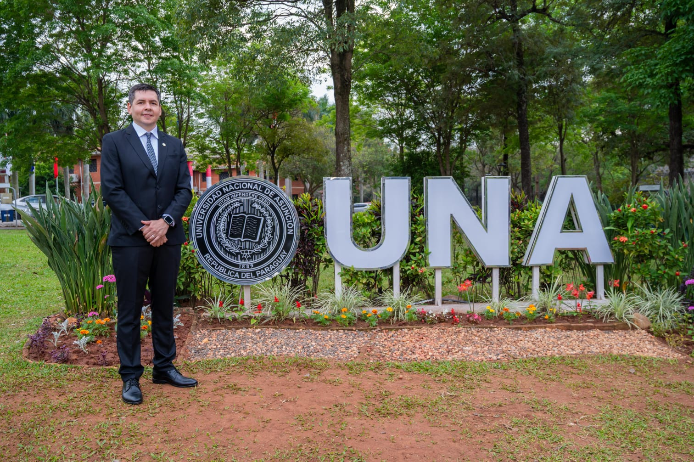

Gobierno abierto
Transparencia, participación y rendición de cuentas.
El Vicedecanato trabaja para fortalecer la calidad académica, la participación, la innovación y la conexión de FIUNA con su comunidad.

El plan propone una Facultad más participativa, acompañada y conectada con el sector productivo, sin perder de vista la excelencia académica.
Prioridades claras para una FIUNA más abierta, innovadora y cercana.
Transparencia, participación y rendición de cuentas.
Apoyo a estudiantes y mejora de las materias críticas.
Autoevaluación permanente y fortalecimiento académico.
Convenios, proyectos y oportunidades para egresados.
Investigación aplicada y soluciones para el desarrollo productivo.
Más oportunidades de formación y colaboración global.
Una universidad moderna, participativa y transparente.
Más apoyo a la producción científica y la innovación.
Escucha activa y construcción de cambios con toda la comunidad.
Consultas institucionales, académicas y de investigación.